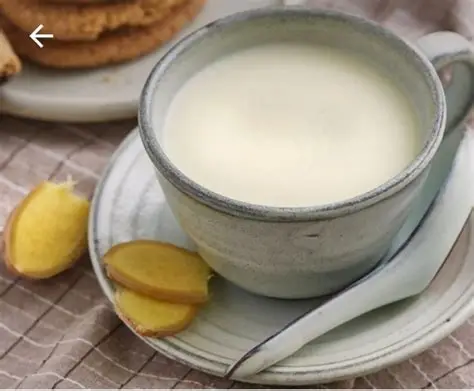

岭南经典甜品推荐
岭南甜品种类繁多，每一款都藏着独特的风味与匠心，以下是最受欢迎的三款经典甜品：

双皮奶
顺德招牌甜品，选用新鲜水牛奶蒸煮，冷却后形成两层奶皮，口感嫩滑如布丁，奶香浓郁。可根据喜好加入红豆、芒果、莲子等配料，清甜不腻。

姜撞奶
用新鲜姜汁和水牛奶碰撞而成的神奇甜品，牛奶遇姜汁后瞬间凝固，口感顺滑，带着淡淡的姜辣与奶香，暖身驱寒，特别适合秋冬食用。

钵仔糕
广式街头传统小吃，用粘米粉或澄面熬制的米浆倒入瓦钵蒸熟，有原味、红豆、绿豆、马蹄等多种口味，口感Q弹软糯，吃起来满口香甜。